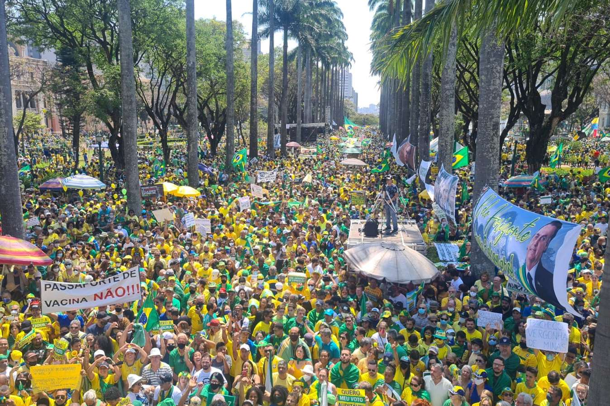

Quem Somos

O Movimento fundamenta-se em valores que entende serem essenciais: Nação e Identidade, Família, Trabalho, Independência Nacional e Patrimônio Histórico e Cultural.
É formada por brasileiros aceitos por incorporação e reunidos por um objetivo comum, que é a grandeza e a liberdade do povo e da Pátria. Estes brasileiros estudam e trabalham para o engrandecimento do Brasil, fomentando uma Nação forte, unida e justa.
É justificado no espírito inquieto dos inconformados e na crença que, com amor a Deus, à Pátria e à Família, dentro dos princípios da moral, da razão e da justiça, o Brasil proporcione a felicidade dos brasileiros, suscitando uma cidadania verdadeiramente preocupada com o destino superior da Pátria!
O Politicamente Incorreto se apresenta como uma Esperança e Alternativa no meio dos escombros e ruínas deixadas pelo politicamente correto, e que asfixiam nosso povo. É também uma plataforma de entendimento entre as diversas tendências Nacionais que se juntam sob um mesmo projeto que visa sobreviver ao estado atual de calamidade e à destruição da nossa Identidade e sobrevivência enquanto Nação e Povo. O PI pretende, num esforço de abrangência, representar todos os Brasileiros.
Observações primárias do Manual
-
➢ Para ser aceito; todos devem concordar com os regulamentos, princípios e diretrizes de trabalho defendidos pelo Movimento Politicamente Incorreto, constantes neste Manual.
-
➢ É vedado qualquer desvio ou descumprimento do regulamento ou lei do Manual, perdendo assim, o agente, qualquer vínculo com o Movimento Politicamente Incorreto.
-
➢ O Movimento Politicamente Incorreto não se responsabiliza por atos de colaboradores ou membros que infringirem a lei; o Movimento reprova qualquer ato criminoso.
-
➢ O Movimento Politicamente Incorreto exige conduta ilibada, reputação moral e cívica, nos conformes da lei, visando interesse social neste projeto.
-
➢ Após o recebimento deste Manual, todos assinam um termo de compromisso com todas as diretrizes pautadas nas diretrizes de trabalho do Movimento.
-
➢ Todos os atos de iniciativa própria, sem consentimento ou autorização de Superior, com prejuízo ao Movimento Politicamente Incorreto, serão considerados atos de extrema gravidade e indisciplina. Desta forma, quaisquer iniciativas que denotem dúvida quanto a sua execução, deverão ser previamente consultadas. Ainda assim, incorrendo o ato em indisciplina, o Movimento tomará medidas no sentido de inibir esta ação, não se responsabilizando pelos prejuízos que eles venham a causar.
-
➢ Não usar símbolos ou uniformes do Movimento Politicamente Incorreto em ocasiões impróprias ou locais inadequados! Os membros do Movimento são considerados espelhos para sociedade, e precisam necessariamente manter-se numa vida regrada e condizente com os objetivos do Movimento.
-
➢ O Politicamente Incorreto é indivisível. É terminantemente proibida qualquer iniciativa neste sentido motivada por regionalismos e outros motivos alheios ao interesse deste movimento.
-
➢ É obrigação de todos os membros e líderes do Movimento Politicamente Incorreto, o auxílio a todos os membros quando necessário for, independente das circunstancias, pois acima de tudo, somos irmãos e precisamos estar fortalecidos uns nos outros